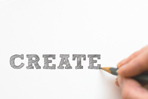

Permaculture is a design system for creating sustainable human environments. - Bill Mollison

Read our Blog!
Apart from the heavy documentation in the wiki we also have space for unwinding and presenting our experience of the project in an informal way.

Support us!
We currently receive no financial support from governemental bodies, foundations, or other NGOs.